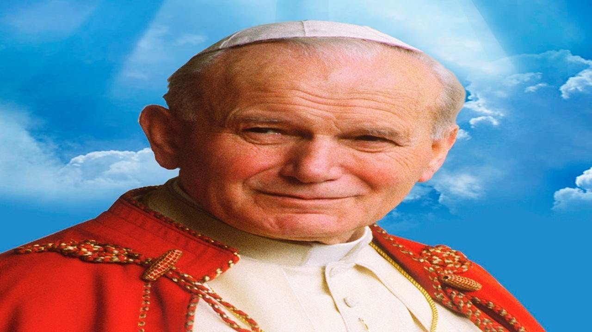

Jan Paweł II

Krótki opis najwiekszego polaka
Jan Paweł II (1920-2005) był pierwszym Polakiem na Stolicy Piotrowej. Odegrał ogromną rolę w upadku komunizmu. Papież Pielgrzym, Papież Rodziny, Największy Obrońca Życia Ludzkiego, Wielki Polak i Wielki Święty. Nauczał o Bożym Miłosierdziu, wskazując, że Jezus Chrystus jest jedyną drogą do Zbawienia.